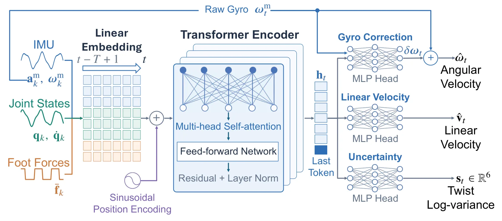
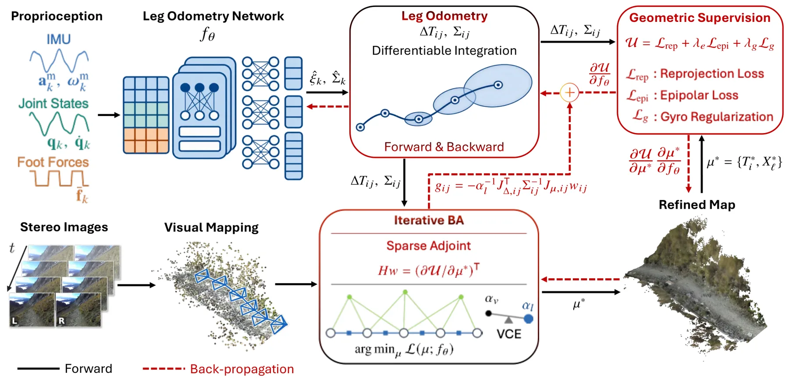
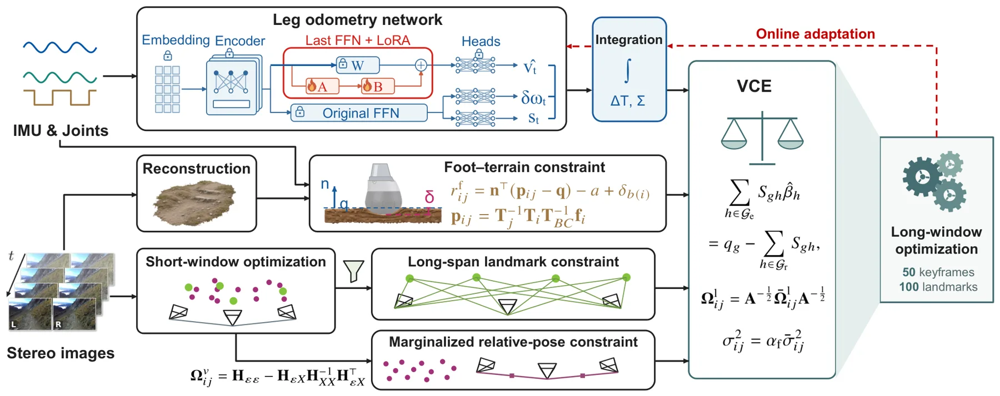
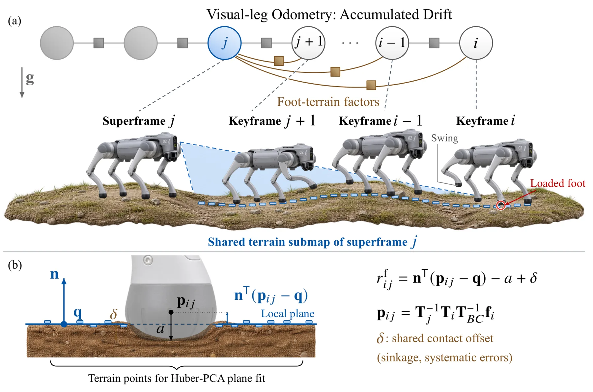
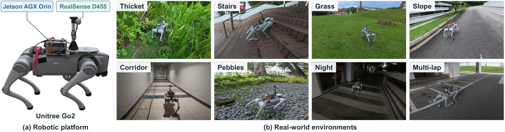
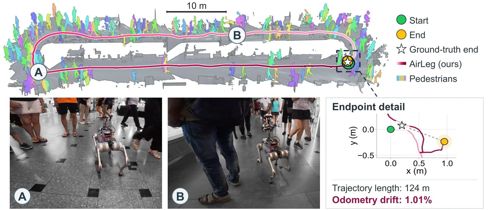

AirLeg：无真值自监督适配的视觉-惯性-腿式 SLAM
AirLeg: A Robust and Accurate Self-Supervised Visual-Inertial-Leg SLAM System
一句话：把「腿式里程计网络」和「视觉地图」放进同一个双层优化里互相精化，于是无真值也能把腿式里程计适配到实机，融合权重再由方差分量估计按残差统计在线调。
ATE
drift
ATE
resource
作者、单位与技术谱系 · Research context
作者与单位
研究脉络
- AirSLAM（K. Xu, Y. Hao, S. Yuan, C. Wang, L. Xie）团队前作关系：代码与流程复用：AirLeg 直接用 AirSLAM 跑出初始特征关联与地图点，并复用它做回环检测与全局 BA（§IV-A、§V-G）。[AirLeg §IV-A/§V-G 与参考文献 [4]]
- Imperative learning（C. Wang 等，IJRR 2025）方法基座关系：框架借用并被改造：本文把 sim-to-real 适配写成 IL 的双层优化，但让上下层目标不同，以避免梯度消失。[AirLeg §II-C 与 §IV-A]
- iSLAM（T. Fu, S. Su, Y. Lu, C. Wang，RA-L 2024）研究上游关系：问题接续：已有 IL-SLAM 让两层共享同一目标，本文指出这会让梯度退化，并以不同目标 + 间接梯度求解区分。[AirLeg §II-C/§IV-D 与参考文献 [21]]
- 最小二乘方差分量估计（Teunissen & Amiri-Simkooei, J. Geodesy 2008）方法基座关系：经典估计理论迁移：把测量学里的 VCE 用来在线估计视觉/腿式两组的方差尺度，并推广到按方向分组。[AirLeg §IV-C2 与参考文献 [42]]
合作网络
- NTU CARTIN ↔ University at Buffalo SAIR LabNTU CARTIN → University at Buffalo SAIR Lab关系：共同署名[arXiv 官方 HTML 首页署名]
- Kuan Xu ↔ Chen WangKuan Xu → Chen Wang关系：连续共同署名（AirVO 2023、AirSLAM 2025、AirLeg 2026）[AirLeg 参考文献 [4][31]]
- AirLeg 项目主页Author group → https://sairlab.org/AirLeg_homepage/关系：论文给出的项目主页（挂在 SAIR Lab 域下）[AirLeg 首页项目地址]
- Ruofei Bai 双署名（NTU + A*STAR IAIC）Ruofei Bai → A*STAR Institute of Advanced Intelligence and Computing关系：双机构署名[arXiv 官方 HTML 首页署名]
作者、单位、邮箱、双署名与项目地址均取自 arXiv 官方 HTML 首页；技术接续取自正文 Related Work 与参考文献条目。未据署名重合推断导师或实验室隶属关系，VCE 的经典出处按论文自述标注。
方法本质拆解 · What actually changed
是微调，但只微调一小部分
网络先在 Isaac Lab 里用约 80 小时/机器人的仿真数据全参数预训练，再用 0.5–3.5 小时真机无标签数据离线适配，此时只训练预测头与少部分骨干、其余冻结。部署阶段再加秩 1 的 LoRA（约 1.3k 参数）在线更新，且适配特征只进入线速度头，陀螺修正头与不确定度头保持原样。因此权重确实改过，但不是从头训练，也不是纯测试时算法。
先验来自本体感知，约束落在因子图上
输入先验不是外部真值，而是机器人自带的 IMU、关节位置/速度与（由关节力矩反算并归一化的）足力；归一化用的是近期总载荷的时间加权均值，目的是让特征表达载荷分布而不是绝对载荷。约束分三层：BA 里的腿式相对位姿因子（协方差由网络方差经积分层传播）、慢变接触偏置吸收下陷的足-地因子、以及上层用重投影误差而非位姿回归构造的监督项。VCE 再把腿式因子的旋转/水平/垂直三个方向分别缩放。
双窗口 + 逐窗一次 VCE 更新
推理端是双窗口：短窗做腿辅助立体 VO，局部 BA 只在关键帧触发（约 1.29 Hz）；长窗联合少量高质量路标与本体感知约束（约 0.13 Hz，独立线程），其余地图点被边缘化成相对位姿约束，从而在不牺牲精度的前提下把长程约束的成本压下来。在线 VCE 每个收敛窗只做一次对数域阻尼更新，尺度在窗间传递并有上下界；在线 LoRA 适配约每 9 秒触发一轮、单轮 1.9 秒，与 VO 共享 GPU。
本质是让监督本身可被修正
它改变的不确定性是「学习型腿式里程计的监督误差」：不再把视觉估计当常量标签，而是让腿式里程计参与精化地图、再用精化后的地图回传监督，使视觉误差不再单向注入网络。局部结果靠可微积分层接成带协方差的相对位姿，再由 VCE 按残差冗余度调权进入因子图；它没有做的是全局无界优化（长窗仍有限，窗外漂移靠事后全局 BA 修）。
输入本体感知序列与立体图像；改变腿式里程计网络参数与因子图权重；动作为可微积分 + 多传感器 BA + 方差分量估计；直接效果是无真值适配后 GrandTour 平均 ATE 0.189 m 并在嵌入式平台实时。

结论与问题Conclusion & Motivation
核心结论
AirLeg 把「学习型腿式里程计怎么在真机上拿到可靠监督」变成双层优化问题：下层多传感器 BA 用腿式里程计精化视觉地图，上层用精化地图的重投影误差回传梯度监督网络，因此监督信号不是固定的视觉伪标签，而是被腿式里程计参与修正过的量。GrandTour 17 条序列上平均 ATE 0.189 m（normal 0.148 m、challenging 0.225 m），是全部 19 个方法中唯一在 17 条序列都低于 0.4 m 的系统。在低成本 Unitree Go2 上，仅用约 0.5 小时无标签数据就把平均漂移压到 0.59%，并在 Jetson AGX Orin 上以 1.4 核 CPU、2.6 GB GPU 实时运行。作者把整体优势归因于两点：腿式里程计是适配到实机而非手工建模的，以及它与视觉的紧融合。
动机与问题
腿式机器人天然带 IMU 与关节编码器，再加一台相机就能做 VIL 估计，代价远低于 LiDAR 方案；但学习型腿式里程计的瓶颈在监督。纯仿真的网络受执行器动力学、传感噪声、足地接触建模误差影响，上真机就退化；纯真机标签又要动捕或额外 LiDAR 估计器。用板载视觉-惯性估计器当伪标签看似免费，实际会让网络只学视觉、把视觉误差继承下来，于是视觉退化时腿式里程计帮不上忙。作者由此提出两个原则：网络主体应学习不依赖视觉的步态运动先验；监督必须用多模态信息精化，而不是从视觉单独导出。
方法Method
方法总览
训练分三阶段、可训练参数逐阶段减少：Isaac Lab 里全参数预训练（约 80 小时/机器人，覆盖 10 级难度的地形、4 种步态、质量/质心/增益随机化），真机无标签数据离线适配（只训练预测头与少部分骨干），部署时加秩 1 的 LoRA 在线适配（约 1.3k 参数）。离线适配写成 imperative learning 的双层问题：上层目标 U(f_θ; μ*) 用重投影误差衡量网络预测运动与精化地图的一致性，下层是多传感器 BA。与已有 IL 系统不同，本文两层目标不同，因此必须计算直接梯度与经 BA 解的间接梯度，作者用可微 Lie 群积分层加稀疏伴随求解实现，不展开 BA。
关键技术细节
网络输入是 T=50 的因果窗（IMU、关节位置/速度、归一化足力），足力在没有力传感器时由关节力矩经阻尼最小二乘反算，并按近期总载荷归一化，以消除体重/负载与仿真-现实执行器差异。输出是体坐标 twist 的 6 维均值、6 个对数方差，以及一个陀螺残差修正头（因为陀螺已直接测角速度），整体仅 0.85 M 参数，用异方差高斯负对数似然联合训练。可微积分层用右乘扰动线性化把逐帧 twist 积成关键帧相对位姿，同一线性化既传播协方差（P_{k+1}=A P A^T + B diag(σ²) B^T）又给出梯度（∂ε_j/∂[v̂;ω̂] 的乘积形式），从而把不确定性一路带进因子图。

实验Experiments
实验设置
主实验用 GrandTour 数据集（ANYmal D，49 个 mission，覆盖雪地、森林、河岸、工地、工业厂区、铁路与城市），按真值覆盖率筛选出 17 条测试序列（8 normal / 9 challenging），且所有方法都只用机器人自带 IMU，而不是原基准里的战术级 IMU。对照是 18 个开源方法，分腿-惯、立体 VO、VIO、VIL 四类，统一关闭回环检测与校正，指标是 SE(3) 对齐后的 ATE RMSE（两次运行平均）。真机实验用 Unitree Go2 + RealSense D455 + Jetson AGX Orin，10 条序列共 1.8 km，真值取起终点同一标定板经 SFM 求得的相对位姿，指标是端点漂移占路径长度的百分比。效率实验在同一台 Jetson 上按模块统计触发率与耗时。
实验数字与比较
GrandTour 上 AirLeg 的 normal 平均 ATE 为 0.148 m，比最好的对手 VINS²（0.21 m）和 OKVIS2（0.22 m）低 25% 以上；challenging 平均 0.225 m，而能跑完全部 9 条的次优方法 IS 是 2.08 m。极端序列上差距更直观：CON-1 相机两次中断（13.9 s 与 15.2 s）、所有视觉与视觉-惯性方法漂移超过 9 m；SBB-1 碎石道砟加过曝让最好的对手 OpenVINS 到 0.82 m，AirLeg 为 0.36 m。Go2 上平均漂移 0.59%，OKVIS2 1.55%、Cerberus 4.70%，低纹理走廊 0.55%（其它方法均 >1.1%），人群商场 1.01%。数据效率方面：0 小时真机数据为 0.54 m，0.5 小时降到 0.23 m（拿到全量数据收益的 88%），3.5 小时为 0.19 m；开启回环后 5 条序列平均从 0.16 m 降到 0.12 m。
消融/失败边界
消融按「去掉哪个模块」给出单调恶化：去掉 sim-to-real 适配最严重（0.189→0.537）；去掉长窗融合 0.414（腿式里程计只在短窗融合就无法修正慢漂）；去掉长跨度路标 0.310；去掉监督精化 0.274，其中 challenging 从 0.225 到 0.344，ALB-3 从 0.077 到 0.515，直接证明固定视觉伪标签会把视觉误差灌进网络；去掉在线 VCE 0.211、去掉足-地约束 0.205、去掉间接梯度 0.202。单模态对照：仅视觉 0.311、仅腿 0.968（垂直误差 0.541 m，是全系统的十倍）。失败边界很清楚：ICE-1 上机器人站在冰面被推约 27 m，腿式观测不到运动，AirLeg 0.31 m 输给最优对手 0.02 m；RIV-1 0.29 m 对 0.13 m；软沙上前端会在部分区间漂。
局限与迁移Limitations & Transfer
局限与待核验
作者明确承认：在线估计只用滑动窗，无法修正窗外累积漂移，必须靠事后的全局 BA 精化；几何评测也受限于有 LiDAR 参考深度的区域。数据层面还有两个被论文说清但容易忽略的限制：GrandTour 真值只覆盖部分 mission，测试序列是按覆盖率筛出来的，因此绝对数值带有选样偏差；Go2 的真值是起终点相对位姿，不是全程真值。我们待核验的有三点：VCE 的窗口长度、阻尼 η、界 γ 与 α_min/α_max 的取值在正文只给了符号，需查附录；「两次运行平均」没有给出方差，重复性未知；论文称会发布代码与数据集，但需确认仓库地址与 WHOLE 之外的许可范围。
与你研究路线的关系
这篇是我们「学习型相对观测 + 经典因子图 + 方差分量估计」组合的直接参照：它把 VCE 用在视觉与腿式两组观测上，并按旋转/水平/垂直三个方向分别缩放，正好对应我们 GNSS/INS/PPP 中「按残差统计在线调权、且不同方向噪声不同」的做法。最可迁移的模块是可微积分层：把网络输出的速度与方差积成关键帧相对位姿与协方差，等于给任何学习型里程计提供一个「可直接插进因子图」的标准接口；其次是「视觉/先验组固定为参考、只解待估组」的解耦技巧，它与 GNSS 与视觉先验不可同时辨识时的处理同构。下一步实验：在我们的多传感器数据上复现三组（腿/视觉/IMU 或 GNSS/视觉/IMU）的在线 VCE，比较固定权与在线 VCE 的 ATE 与垂直漂移，并检查窗口长度对权重收敛的影响。







